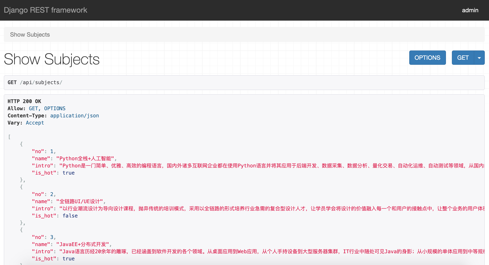

54.RESTful架构和DRF入门
RESTful架构和DRF入门¶
把软件（Software）、平台（Platform）、基础设施（Infrastructure）做成服务（Service）是很多IT企业都一直在做的事情，这就是大家经常听到的SasS（软件即服务）、PasS（平台即服务）和IasS（基础设置即服务）。实现面向服务的架构（SOA）有诸多的方式，包括RPC（远程过程调用）、Web Service、REST等，在技术层面上，SOA是一种抽象的、松散耦合的粗粒度软件架构；在业务层面上，SOA的核心概念是“重用”和“互操作”，它将系统资源整合成可操作的、标准的服务，使得这些资源能够被重新组合和应用。在实现SOA的诸多方案中，REST被认为是最适合互联网应用的架构，符合REST规范的架构也经常被称作RESTful架构。
REST概述¶
REST这个词，是Roy Thomas Fielding在他2000年的博士论文中提出的，Roy是HTTP协议（1.0和1.1版）的主要设计者、Apache服务器软件主要作者、Apache基金会第一任主席。在他的博士论文中，Roy把他对互联网软件的架构原则定名为REST，即REpresentational State Transfer的缩写，中文通常翻译为“表现层状态转移”或“表述状态转移”。
这里的“表现层”其实指的是“资源”的“表现层”。所谓资源，就是网络上的一个实体，或者说是网络上的一个具体信息。它可以是一段文本、一张图片、一首歌曲或一种服务。我们可以用一个URI（统一资源定位符）指向资源，要获取到这个资源，访问它的URI即可，URI就是资源在互联网上的唯一标识。资源可以有多种外在表现形式。我们把资源具体呈现出来的形式，叫做它的“表现层”。比如，文本可以用text/plain格式表现，也可以用text/html格式、text/xml格式、application/json格式表现，甚至可以采用二进制格式；图片可以用image/jpeg格式表现，也可以用image/png格式表现。URI只代表资源的实体，不代表它的表现形式。严格地说，有些网址最后的.html后缀名是不必要的，因为这个后缀名表示格式，属于“表现层”范畴，而URI应该只代表“资源”的位置，它的具体表现形式，应该在HTTP请求的头信息中用Accept和Content-Type字段指定，这两个字段才是对“表现层”的描述。
访问一个网站，就代表了客户端和服务器的一个互动过程。在这个过程中，势必涉及到数据和状态的变化。Web应用通常使用HTTP作为其通信协议，客户端想要操作服务器，必须通过HTTP请求，让服务器端发生“状态转移”，而这种转移是建立在表现层之上的，所以就是“表现层状态转移”。客户端通过HTTP的动词GET、POST、PUT（或PATCH）、DELETE，分别对应对资源的四种基本操作，其中GET用来获取资源，POST用来新建资源（也可以用于更新资源），PUT（或PATCH）用来更新资源，DELETE用来删除资源。
简单的说RESTful架构就是：“每一个URI代表一种资源，客户端通过四个HTTP动词，对服务器端资源进行操作，实现资源的表现层状态转移”。
我们在设计Web应用时，如果需要向客户端提供资源，就可以使用REST风格的URI，这是实现RESTful架构的第一步。当然，真正的RESTful架构并不只是URI符合REST风格，更为重要的是“无状态”和“幂等性”两个词，我们在后面的课程中会为大家阐述这两点。下面的例子给出了一些符合REST风格的URI，供大家在设计URI时参考。
| 请求方法（HTTP动词） | URI | 解释 |
|---|---|---|
| GET | /students/ |
获取所有学生 |
| POST | /students/ |
新建一个学生 |
| GET | /students/ID/ |
获取指定ID的学生信息 |
| PUT | /students/ID/ |
更新指定ID的学生信息（提供该学生的全部信息） |
| PATCH | /students/ID/ |
更新指定ID的学生信息（提供该学生的部分信息） |
| DELETE | /students/ID/ |
删除指定ID的学生信息 |
| GET | /students/ID/friends/ |
列出指定ID的学生的所有朋友 |
| DELETE | /students/ID/friends/ID/ |
删除指定ID的学生的指定ID的朋友 |
DRF使用入门¶
在Django项目中，如果要实现REST架构，即将网站的资源发布成REST风格的API接口，可以使用著名的三方库djangorestframework ，我们通常将其简称为DRF。
安装和配置DRF¶
安装DRF。
| Bash | |
|---|---|
配置DRF。
编写序列化器¶
前后端分离的开发需要后端为前端、移动端提供API数据接口，而API接口通常情况下都是返回JSON格式的数据，这就需要对模型对象进行序列化处理。DRF中封装了Serializer类和ModelSerializer类用于实现序列化操作，通过继承Serializer类或ModelSerializer类，我们可以自定义序列化器，用于将对象处理成字典，代码如下所示。
| Python | |
|---|---|
上面的代码直接继承了ModelSerializer，通过Meta类的model属性指定要序列化的模型以及fields属性指定需要序列化的模型字段，稍后我们就可以在视图函数中使用该类来实现对Subject模型的序列化。
编写视图函数¶
DRF框架支持两种实现数据接口的方式，一种是FBV（基于函数的视图），另一种是CBV（基于类的视图）。我们先看看FBV的方式如何实现数据接口，代码如下所示。
对比上一个章节的使用bpmapper实现模型序列化的代码，使用DRF的代码更加简单明了，而且DRF本身自带了一套页面，可以方便我们查看我们使用DRF定制的数据接口，如下图所示。

直接使用上一节写好的页面，就可以通过Vue.js把上面接口提供的学科数据渲染并展示出来，此处不再进行赘述。
实现老师信息数据接口¶
编写序列化器。
| Python | |
|---|---|
编写视图函数。
配置URL映射。
通过Vue.js渲染页面。
前后端分离下的用户登录¶
之前我们提到过， HTTP是无状态的，一次请求结束连接断开，下次服务器再收到请求，它就不知道这个请求是哪个用户发过来的。但是对于一个Web应用而言，它是需要有状态管理的，这样才能让服务器知道HTTP请求来自哪个用户，从而判断是否允许该用户请求以及为用户提供更好的服务，这个过程就是常说的会话管理。
之前我们做会话管理（用户跟踪）的方法是：用户登录成功后，在服务器端通过一个session对象保存用户相关数据，然后把session对象的ID写入浏览器的cookie中；下一次请求时，HTTP请求头中携带cookie的数据，服务器从HTTP请求头读取cookie中的sessionid，根据这个标识符找到对应的session对象，这样就能够获取到之前保存在session中的用户数据。我们刚才说过，REST架构是最适合互联网应用的架构，它强调了HTTP的无状态性，这样才能保证应用的水平扩展能力（当并发访问量增加时，可以通过增加新的服务器节点来为系统扩容）。显然，基于session实现用户跟踪的方式需要服务器保存session对象，在做水平扩展增加新的服务器节点时，需要复制和同步session对象，这显然是非常麻烦的。解决这个问题有两种方案，一种是架设缓存服务器（如Redis），让多个服务器节点共享缓存服务并将session对象直接置于缓存服务器中；另一种方式放弃基于session的用户跟踪，使用基于token的用户跟踪。
基于token的用户跟踪是在用户登录成功后，为用户生成身份标识并保存在浏览器本地存储（localStorage、sessionStorage、cookie等）中，这样的话服务器不需要保存用户状态，从而可以很容易的做到水平扩展。基于token的用户跟踪具体流程如下：
- 用户登录时，如果登录成功就按照某种方式为用户生成一个令牌（token），该令牌中通常包含了用户标识、过期时间等信息而且需要加密并生成指纹（避免伪造或篡改令牌），服务器将令牌返回给前端；
- 前端获取到服务器返回的token，保存在浏览器本地存储中（可以保存在
localStorage或sessionStorage中，对于使用Vue.js的前端项目来说，还可以通过Vuex进行状态管理）； - 对于使用了前端路由的项目来说，前端每次路由跳转，可以先判断
localStroage中有无token，如果没有则跳转到登录页； - 每次请求后端数据接口，在HTTP请求头里携带token；后端接口判断请求头有无token，如果没有token以及token是无效的或过期的，服务器统一返回401；
- 如果前端收到HTTP响应状态码401，则重定向到登录页面。
通过上面的描述，相信大家已经发现了，基于token的用户跟踪最为关键是在用户登录成功时，要为用户生成一个token作为用户的身份标识。生成token的方法很多，其中一种比较成熟的解决方案是使用JSON Web Token。
JWT概述¶
JSON Web Token通常简称为JWT，它是一种开放标准（RFC 7519）。随着RESTful架构的流行，越来越多的项目使用JWT作为用户身份认证的方式。JWT相当于是三个JSON对象经过编码后，用.分隔并组合到一起，这三个JSON对象分别是头部（header）、载荷（payload）和签名（signature），如下图所示。

-
头部
其中，
alg属性表示签名的算法，默认是HMAC SHA256（简写成HS256）；typ属性表示这个令牌的类型，JWT中都统一书写为JWT。 -
载荷
载荷部分用来存放实际需要传递的数据。JWT官方文档中规定了7个可选的字段：
- iss ：签发人
- exp：过期时间
- sub：主题
- aud：受众
- nbf：生效时间
- iat：签发时间
- jti：编号
除了官方定义的字典，我们可以根据应用的需要添加自定义的字段，如下所示。
-
签名
签名部分是对前面两部分生成一个指纹，防止数据伪造和篡改。实现签名首先需要指定一个密钥。这个密钥只有服务器才知道，不能泄露给用户。然后，使用头部指定的签名算法（默认是
HS256），按照下面的公式产生签名。Python 算出签名以后，把头部、载荷、签名三个部分拼接成一个字符串，每个部分用
.进行分隔，这样一个JWT就生成好了。
JWT的优缺点¶
使用JWT的优点非常明显，包括：
- 更容易实现水平扩展，因为令牌保存在浏览器中，服务器不需要做状态管理。
- 更容易防范CSRF攻击，因为在请求头中添加
localStorage或sessionStorage中的token必须靠JavaScript代码完成，而不是自动添加到请求头中的。 - 可以防伪造和篡改，因为JWT有签名，伪造和篡改的令牌无法通过签名验证，会被认定是无效的令牌。
当然，任何技术不可能只有优点没有缺点，JWT也有诸多缺点，大家需要在使用的时候引起注意，具体包括：
- 可能会遭受到XSS攻击（跨站脚本攻击），通过注入恶意脚本执行JavaScript代码获取到用户令牌。
- 在令牌过期之前，无法作废已经颁发的令牌，要解决这个问题，还需要额外的中间层和代码来辅助。
- JWT是用户的身份令牌，一旦泄露，任何人都可以获得该用户的所有权限。为了降低令牌被盗用后产生的风险，JWT的有效期应该设置得比较短。对于一些比较重要的权限，使用时应通过其他方式再次对用户进行认证，例如短信验证码等。
使用PyJWT¶
在Python代码中，可以使用三方库PyJWT生成和验证JWT，下面是安装PyJWT的命令。
| Bash | |
|---|---|
生成令牌。
| Python | |
|---|---|
验证令牌。
| Python | |
|---|---|
如果不清楚JWT具体的使用方式，可以先看看第55天的内容，里面提供了完整的投票项目代码的地址。